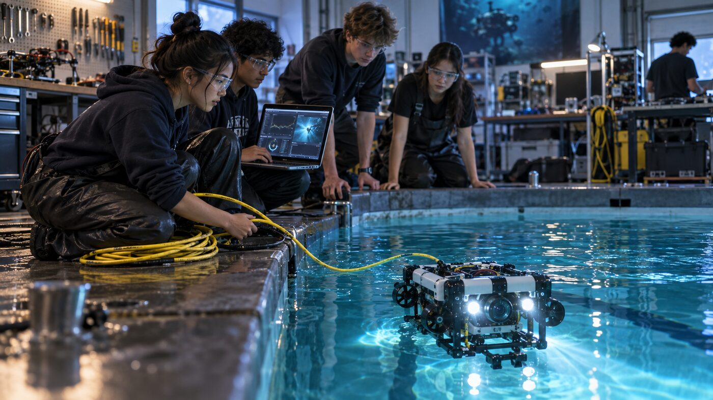
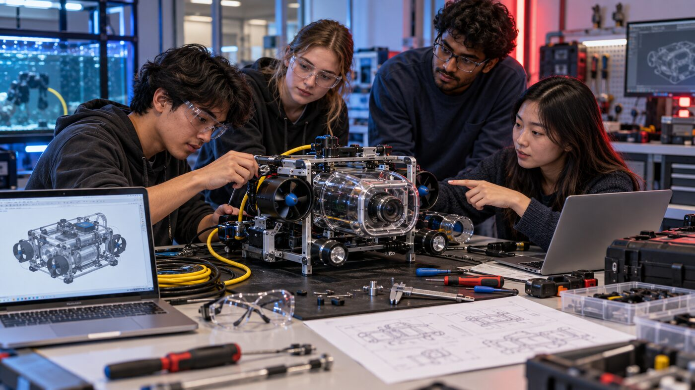
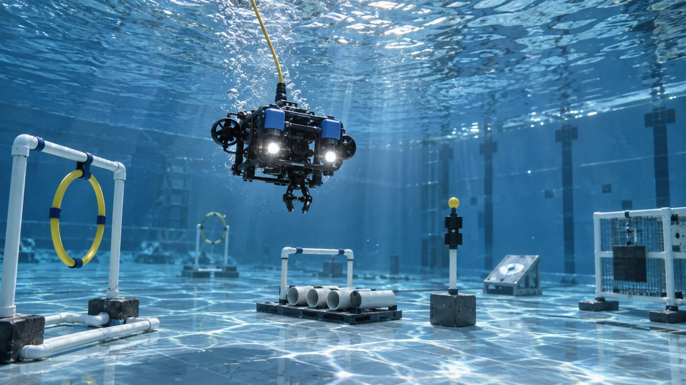

Outreach and volunteering
Robotics service beyond the team table.
AVI’s work includes volunteering and regional support, not just competition. Students and mentors help make STEM events stronger for Fresno State, the Central Valley, and nearby robotics communities.
MESA
Supporting student STEM access.
AVI has supported student STEM through volunteer work with the MESA program on campus, including more than $1,400 in support connected to that service.
The deeper goal is access: help more students see engineering as something they can touch, build, test, and improve.
Monterey regional
Showing up for the regional robotics community.
AVI also values volunteer service connected to the Monterey regional. That work keeps the organization tied to the broader robotics ecosystem, not isolated inside its own shop.
Future updates can add the exact roles, dates, and photos once the public event summary is ready.
Image slots
Replace placeholders with real outreach photos.
These AI-generated images are clearly labeled and should be replaced with real MESA, Monterey regional, or Central Valley event photos.


